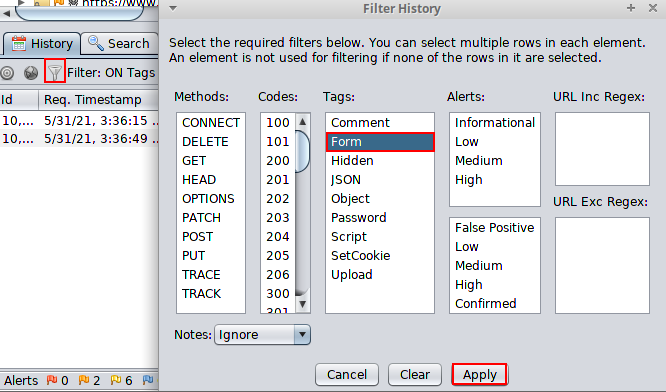
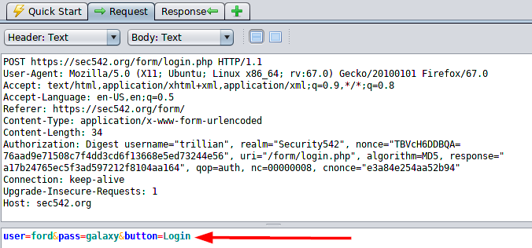
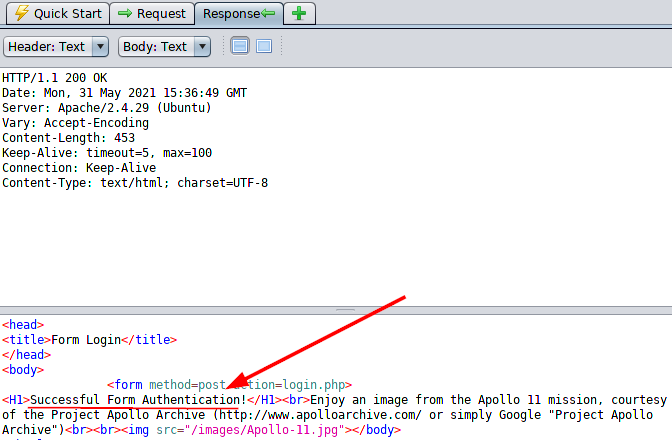
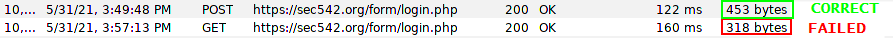

Successfull Authentication (example)
Configre the proxy on the Browser, to intercept it with ZAP
Successfull Authentication1. Go to the webpage Form login and Login
2. ZAP → History Tab → Filter → Form
3. History Tab → Request
4. History Tab → Response
 How can we differentiate a successful from an unsuccessful login?
 Both successful and unsuccessful login attempts result in an HTTP 200 OK response.
This can make discerning valid versus invalid credentials more difficult.
The resultant HTML provides the difference rather than the HTTP Status codes.
In this example, and also with many real-world applications, the size of the responses can provide a method for differentiating valid and invalid credentials.
Highlight one of the POST requests and review the details.